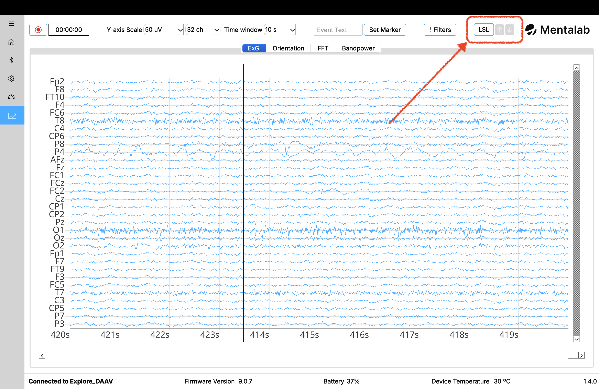
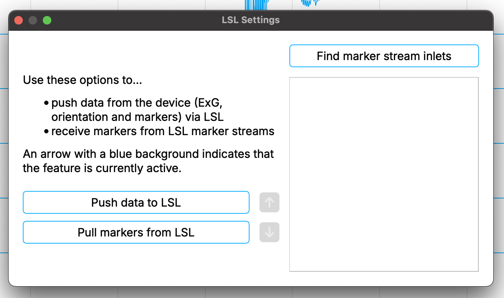
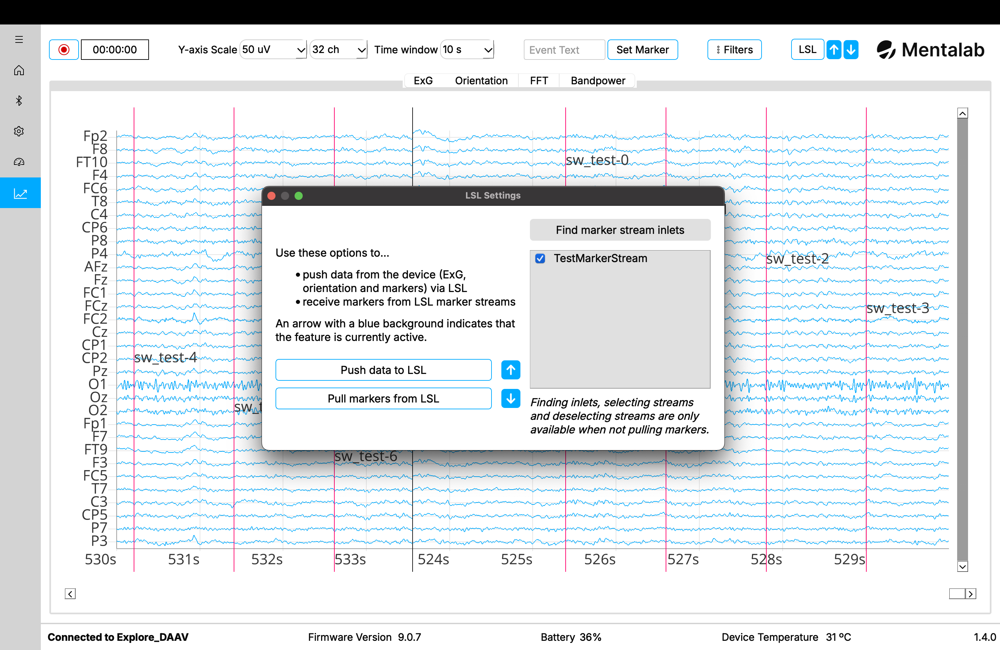
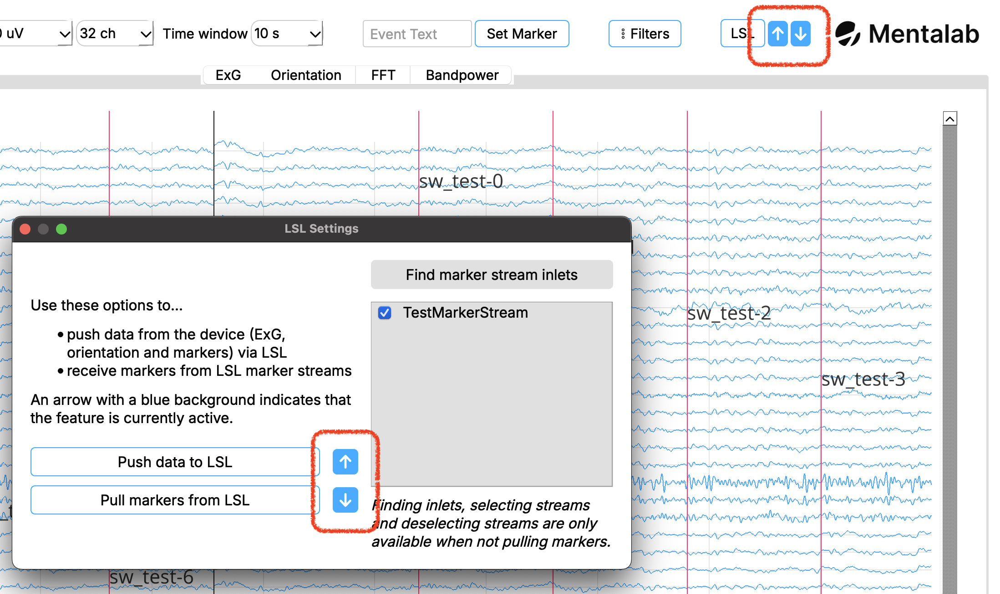

Lab Streaming Layer
You can access LSL features by navigating to the Visualization page and clicking the LSL button.
This opens a dialog that lets you push data from the Explore device via LSL and pull markers from available marker streams.

Use the Visualization page to stream data from your Mentalab Explore device to Lab Streaming Layer.

The LSL dialog offers features to push and pull data to and from LSL.
Push data to LSL
To push data via LSL, click Push data to LSL.
This generates three LSL data streams:
-
one stream for ExG data
-
one stream for motion data
-
one stream for event markers
By using LSL, you can combine your data stream with other software that supports LSL.
Explore Desktop generates three streams according to your device name:
-
Explore_<DEVICE_ID>_ORN— motion data, containing accelerometer, gyroscope, magnetometer, and quaternion data -
Explore_<DEVICE_ID>_ExG— ExG data -
Explore_<DEVICE_ID>_Marker— event markers received or set by Explore Desktop
Pull markers from LSL
You can additionally pull markers from external software and visualize them in Explore Desktop.
To pull markers from LSL:
-
Click Find marker stream inlets to discover available marker streams in the network.
-
Select the checkbox next to the stream name you want to subscribe to.
-
Click Pull markers from LSL.
Markers from the selected stream are placed at their accompanying timestamp and recorded alongside other event markers from Explore Desktop.
| To refresh the list of available marker streams, stop pulling markers first. Then start stream discovery again using Find marker stream inlets. |

The LSL dialog shows whether Explore Desktop is currently pushing data and/or pulling markers using LSL. It also shows which marker streams are being pulled from.
Best synchronization accuracy with LSL is achieved by using Mentalab Explore in combination with Mentalab Hypersync.
For more information about possible integrations using LSL, refer to the Integrations section of the wiki.
LSL push and pull indicators
You can quickly check whether you are pushing data to LSL or receiving markers from at least one marker stream by looking at the two arrows next to the LSL button.
-
The arrow pointing up indicates the status of pushing data to LSL.
-
If the arrow and background are greyed out, you are not currently pushing data to LSL.
-
-
The arrow pointing down indicates the status of pulling markers from LSL.
-
If the arrow and background are greyed out, you are not currently pulling markers from LSL.
-
If the background is blue, you are currently pulling markers from at least one marker stream.
-
You can check the currently active marker streams in the LSL dialog.
-
These symbols are also shown next to the respective push and pull buttons in the LSL dialog and behave in the same way.

The LSL push and pull indicators help you quickly check which LSL feature is active.